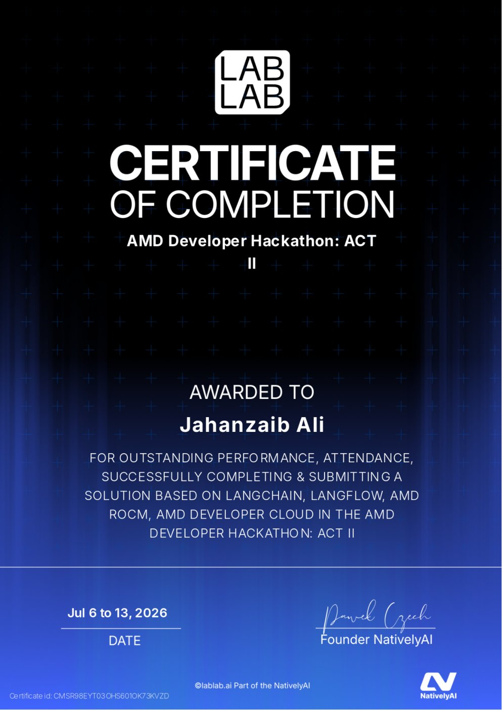

JAHANZAIB ALI
I build the infrastructure behind AI agents — from the agent runtime and LLM gateway down to the hosting layer it all runs on.
About
I build production-grade systems solo — end to end. That means the AI
agent runtime and its orchestration layer, the LLM gateway it talks
to, the database and infra underneath, and the hosting stack that
keeps it all online. Not prototypes — systems with admin control
planes, observability, budgets, and audit trails from day one.
My work spans autonomous computer-use agents, self-hosted LLM
routing and proxy infrastructure, fintech platforms handling real
transactions, and the hosting/licensing systems underneath. Python
and Rust on the backend, Next.js and NestJS on the front, Postgres
and Docker everywhere in between.
Skills
Languages
Frameworks
Data & Infra
AI & Agents
Activity
Live stats are momentarily unavailable (GitHub API) — the link below always works.
See full activity on GitHub →NovaThe Agent's Computer
Most AI coding agents are a black-box chat window — you can't see what they're doing, or trust the result, until it's already done.
Nova gives the agent an actual computer: a live, streaming six-facet view — Files, Terminal, Editor, Browser, Activity, Review — so you watch it work in real time, with sub-agents, memory, and per-thread sandboxes handling execution.
Forge Studio
Running production AI features across multiple LLM providers means juggling separate API keys, no shared budget visibility, and no failover when a provider goes down.
A self-hosted proxy layer in front of every provider — smart routing with automatic fallback, per-provider budget tracking, a visual proxy-pool topology with live health/latency, and a Prometheus /metrics endpoint so every request is observable.
Genesis X
Buying access to bonds, real estate, or private equity as an individual investor usually means opaque intermediaries with no unified view of pricing or holdings.
Genesis X packages these instruments as digital products investors browse, buy, and manage directly — transparent pricing on top of a full transactional backend: auth, payments, and holdings.
Ali Kernel
Swapping the LLM behind an agent usually means rebuilding the tooling, memory, and safety scaffolding around it from scratch for the new backend.
A single-binary Rust gateway in front of any OpenAI-compatible backend — tool access, RAG memory, semantic routing, and a self-critique loop stay constant no matter which model sits behind it, from a local llama.cpp server to any hosted provider.
fox-hosting
WHMCS is the industry-standard hosting/billing platform, but it's locked behind an external license server and an ionCube-encoded API that's slow to integrate with a modern frontend.
Pairs WHMCS 8.10 with a custom-built license server (no external whmcs.com dependency) and a Next.js 16 client portal that talks to MySQL directly, bypassing the encoded API entirely.
Credentials
